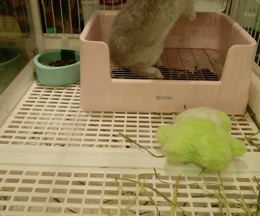
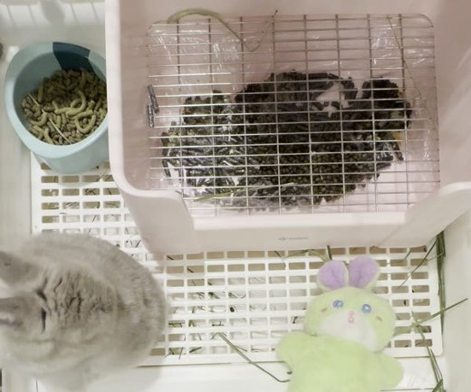
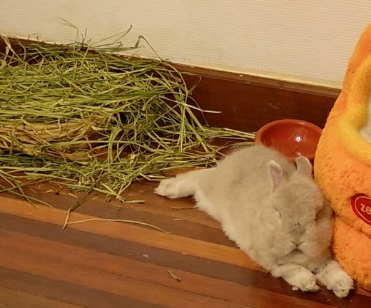
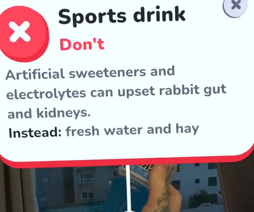
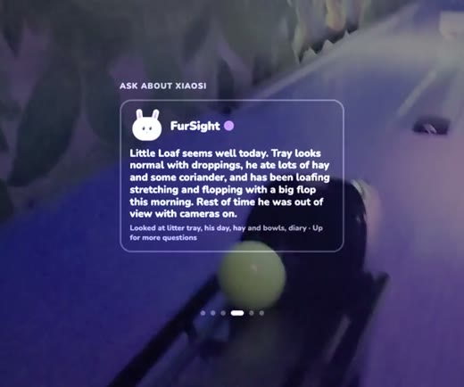
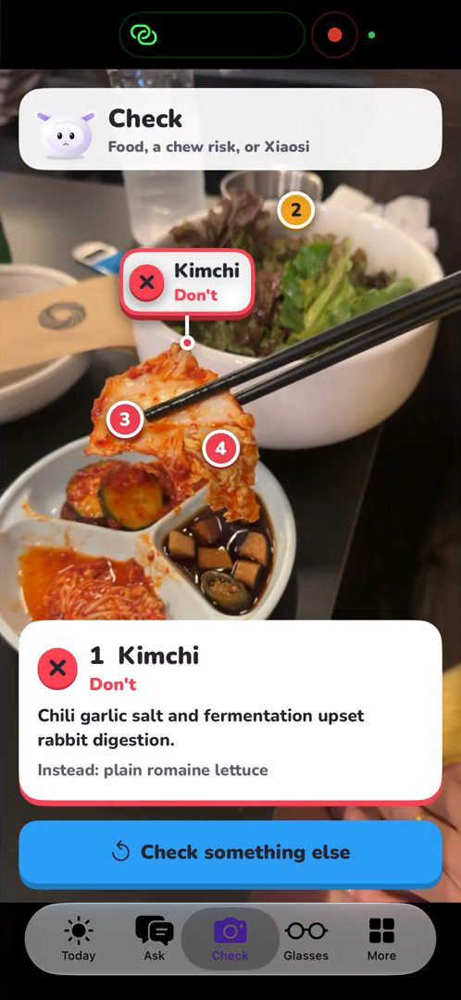
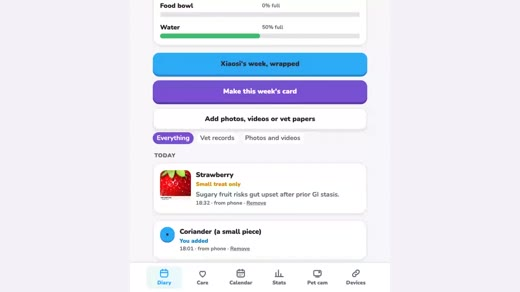

Passive
always watching, no screen needed

Cage camLitter trayEvery visit, from the side

Top camHay, food, waterThe whole cage, from above

Free-roam camHis dayFinds him, turns and zooms

ConceptFurSight TrayWeighs him every visit
FurSight brainon the Meta Model API
Muse Sparkthe agent: picks its tools, checks food, reads his hay, writes his day
SAM 3.1the finder: him on every cam, hazards, droppings, stickers
Voice Transcribethe ears: questions asked out loud
Safety list135 foods; can only make a verdict stricter, never softer
His memorydiary, rooms, treats, vet records, his week
Active
when you check, ask or look

Meta Quest 3Labels on real thingsFood, rooms, his poo

Ray-Ban DisplayWherever you are"How is he?" and his cam

iPhoneCheck a whole plateAlerts and stickers

WebHis diary and statsAny browser